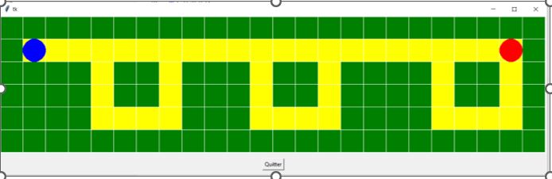

UAA5 TP2 Bis - Introduction aux fonctions
Notions abordées :
-
définition d'une fonction (
def) -
paramètres lors de l'appel ( entrées )
-
variables locales, variables globales (
global)
Consignes
-
Tu peux tester ton code avec l'IDE du chapitre "7. Bac à sable"
-
Complète ton fichier "memo" avec ce que tu as appris au fur et à mesure de ton avancement dans le cours.
1. Algo-8 : Créer ses propres blocs: Introduction aux fonctions
Algorea 1 - Construire une machine
Vas sur le site d'Algorea Serious Game et dans le chapitre 8 - "Créer ses propres fonctions", fais les exercices:
-
Construire une machine * à ***
-
Construire une machine **** ( !!! CHALLENGE !!! )
Algorea 2 - Rejoindre la fusée
Vas sur le site d'Algorea Serious Game et dans le chapitre 8 - "Créer ses propres fonctions", fais les exercices:
-
Rejoindre la fusée * à ***
-
Rejoindre la fusée **** ( !!! CHALLENGE !!! )
Algorea 3 - Dessiner avec la tortue (Maison)
Vas sur le site d'Algorea Serious Game et dans le chapitre 8 - "Créer ses propres fonctions", fais les exercices:
- Dessiner avec la tortue * à ****
2. Introduction avec un exemple
Découv 1: Appel de la fonction rectange
On considère la fonction ci-dessous.
Exécute le code. Il ne se passe rien de visible : la fonction a juste été mise en mémoire.
Pour pouvoir l'utiliser, il faut l'appeler.
Ecris dans le terminal ci-dessus les codes suivants et observe les sorties obtenues :
>>> perimetre_rectangle
>>> perimetre_rectangle()
>>> perimetre_rectangle
>>> perimetre_rectangle(long,larg)
>>> perimetre_rectangle(3)
>>> perimetre_rectangle(3,4)
Exécute la cellule suivante :
>>> a = 2
>>> b = 5
>>> perimetre_rectangle(a,b)
Pour cela, exécute le code et visualise pas à pas son exécution avec Python Tutor en ligne. Regarde en particulier les blocs à droite qui sont créés et détruits.
A retenir
Les variables situées à l'extérieur d'une fonction sont appelées variables globales et les variables situées à l'intérieur d'une fonction (y compris les paramètres) sont appelées variables locales. A la fin de l'exécution d'une fonction, les variables locales sont détruites.
Remarque :
les variables globales et locales peuvent avoir le même nom. Mais, sauf type particulier comme les listes ou manipulations particulières que nous n'aborderons pas dans ce cours, elles n'ont pas de lien entre elles comme le montre l'exécution de la cellule suivante avec les variables globale et locale perimetre (on remarquera également sur cet exemple que si la fonction admet 2 paramètres avec des noms différents afin de les différencier, l'appel peut se faire avec les mêmes variables, c'est-à-dire les mêmes valeurs).
def perimetre_rectangle(long, larg):
perimetre = 2*(long + larg)
print(perimetre)
>>> perimetre = 2
>>> perimetre_rectangle(perimetre,perimetre)
Dans les exemples ci-dessus, nous avons vu que la valeur qui est affichée en sortie est la valeur renvoyée par la fonction. Souvent, il est utile de stocker cette valeur dans une variable afin de pouvoir la réutiliser ultérieurement.
Exécute le code suivant avec Python Tutor en ligne et observe précisément ce qu'il se passe à l'étape 8 lorsque la fonction affiche sa valeur et que son bloc est détruit.
def perimetre_rectangle(long, larg):
perimetre = 2*(long + larg)
print(perimetre)
>> a = 2
>>> b = 5
>>> valeur_perimetre = perimetre_rectangle(a,b)
3. Comprendre et manipuler les fonctions
Rappel sur les fonctions
Les fonctions sont une brique de base en programmation :
- on leur donne des informations en entrée,
- elles exécutent des calculs en utilisant ces informations,
Un point important à comprendre est que lorsqu'on utilise des fonctions, on procède en 2 temps :
- dans un 1er temps, on les définit,
- dans un 2nd temps, on effectue des appels de fonction.
_Dans cette activité, toutes les fonctions que l'on va manipuler sont déjà entièrement écrites. Le but est de comprendre, d'une part, ce qu'elles calculent et ce qu'elles affichent, et, d'autre part, de savoir quel type d'appel il faut effectuer pour répondre à tel ou tel problème.
Découv 2 : Fonction carre
def carre(x):
print(x**2)
- Quel est le mot-clé qui permet de définir une fonction ?
- Comment se nomme la fonction ?
- Qu'affiche cette fonction ?
- Quelle instruction doit-on écrire pour calculer le carré de \(42\) ?
- Quelle instruction doit-on écrire pour calculer le carré de \(-12\) ?
Solution
- def
- carre
- le nombre passé en paramètre élevé au carré
- carre(42)
- carre(-12)
Découv 3 : Somme de carre
On souhaite affecter le calcul \(8^2+(-3)^2\) à partir de 8 et -3
Comment le faire en modifiant la fonction carre du test2 ?
def somme_carres(x, ...):
print(x**2 + ...)
>>> somme_carres(8, -3)
73
Découv 4 : Comparaison (Maison)
Info
On rappelle que l'instruction a == b renvoie True si les contenus des variables a et b sont égales, et False sinon.
Ecrire une instruction permettant de comparer la valeur \(8^{2} + (-3)^{2}\) et la valeur \(8^{2} + 3^{2}\) en utilisant la fonction de carre du test2.
Solution
somme_carres(8, -3) ==somme_carrescarre(8, 3)
Découv 5 : Parité (Maison)
def est_pair(x):
print(x % 2 == 0)
- Comment se nomme la fonction ?
- Qu'affiche cette fonction ?
- Quel est l'intérêt de cette fonction ?
- Quelle instruction doit-on écrire pour savoir si le nombre \((-31)^{2}\) est pair ?
- Quelle instruction doit-on écrire pour savoir si le nombre est \(12^2\) impair ?
Solution
- est_pair
- affiche
Truesi le reste de la division par 2 du nombre passé est nul,Falses'il ne l'est pas - déterminer si un nombre est pair ou impair
- est_pair(carre(-32))
- est_pair(carre(12))
Découv 6 : Opération
def somme_produit (a,b):
print( a+b,a*b )
- Comment se nomme la fonction ?
- Qu'affiche cette fonction ?
- Combien y a-t-il de paramètres ?
- Quelle instruction doit-on écrire pour calculer la somme et la produit des nombres \(2,3\) et \(-3,5\) ?
- Quelle instruction doit-on écrire pour calculer la somme et le produit des nombres \(6,8\) et \(-7,5\) ?
Solution
- somme_produit
- affiche la somme et le produit de 2 nombres passés en paramètre
- 2 paramètres
-
somme_produit(2,3)somme_produit(-3,5) -
somme_produit(6,8)somme_produit(-7,5)
Découv 7 : Evolution des prix (Maison)
def evolution_prix(prix, pourcentage):
print(prix * (1 + pourcentage/100))
-
Qu'affiche l'instruction
evolution_prix(5,2)?Donne une interprétation concrète de ce résultat.
-
Qu'affiche l'instruction
evolution_prix(5,-3)?Donne une interprétation concrète de ce résultat.
-
Ecrirs dans la cellule ci-desous une séquence d'instructions utilisant cette fonction pour connaître le prix d'un article valant initialement \(50\) euros et subissant successivement une hausse de \(5\%\) puis une baisse de \(2\%\).
# Tests (insensible à la casse)(Ctrl+I)
(Alt+: ; Ctrl pour inverser les colonnes)
(Esc)
4. Créer ses propres fonctions
Rappel sur les fonctions
Les fonctions sont une brique de base en programmation :
- on leur donne des informations en entrée,
- elles exécutent des calculs en utilisant ces informations,
Un point important à comprendre est que lorsqu'on utilise des fonctions, on procède en 2 temps :
- dans un 1er temps, on les définit,
- dans un 2nd temps, on effectue des appels de fonction.
Exemple
On définit, dans un 1er temps, une fonction appelée aire_rectangle :
- qui a 2 paramètres (c'est à dire 2 entrées) :
longueuretlargeur, - qui effectue le calcul de l'aire du rectangle de longueur
longueuret de largeurlargeuret affiche le résultat obtenu.
def aire_rectangle(longueur, largeur):
aire = longueur * largeur
print(aire)
On peut, dans un 2nd temps, appeler cette fonction autant de fois que l'on veut grâce à son nom pour calculer des aires de rectangles :
>>> aire_rectangle(3, 5)
Le but de cette activité est de créer ses propres fonctions pour répondre à des problèmes simples.
Découv 8 : Périmètre d'un rectangle
-
Compléte la fonction
perimetre_rectanglesuivante pour qu'elle affiche le périmètre d'un rectangle à partir de sa longueurlongueuret de sa largeurlargeur:###(Dés-)Active le code après la ligne# Tests(insensible à la casse)
(Ctrl+I)Entrer ou sortir du mode "deux colonnes"
(Alt+: ; Ctrl pour inverser les colonnes)Entrer ou sortir du mode "plein écran"
(Esc)Tronquer ou non le feedback dans les terminaux (sortie standard & stacktrace / relancer le code pour appliquer)Si activé, le texte copié dans le terminal est joint sur une seule ligne avant d'être copié dans le presse-papier.128013 b+du8(/fgsrS3tc=67i_klvm1):P.ne45,p2oay*0h 050e0G0p0N0u0x0l0b0q0x0N0l0l0r010p0u0K010406050l0f0z0z0N0m0O040n0M0x0f0,0M0F050i0?0^0`0|0;0K04051c151f0i1c0;0e0u0y0!0$0(0*0R0u0k0R0x1t0R0p0/050V0c0x0G1o0%0)011s1u1w1u0p1C1E1A0p0m1d0p0R0!0 0l0K0N0F0*0L011G1q010j0X0G0F0N0z0G1A1Z1#1*1I1-1E1:1=0/0a0b0D0m0M0K0M0l0u120F0b0T1X0m0m0G0q2a151^0F1d0i1V2n1S1U1T1B0e1`0*1w0F1/271A1l1n0#1H2x0u2z0F0M2D1A0K2g1d2l2n2R0=1!2b2F1+2K0m0_0x0/0A2k2V0:2U1_2X1I2Z2#0/0L2)1#2+2l2w012:0N2$040o2@2m0;2`2.0*2}2 0H322_2V2{380/0I3b343d362|0M2!2~0/0s3i2,2W1p2/3n2;040t3s353v373x3p040g3b1g2P152D2q0e1U2v3l0q2L1?1d3N1e3L2T162*053T0T2Q3k3D010w0/0T0j3b0b3t3e0j0/0K0G0m0u1=1S0G0v2g2i1#0k1E3J3C2G010.040h483+4a0F0/0x130k0f0G0f0m4f2-3,4c0J3=3@3l4i040$0m0k4o4q3#2^4x4t0/0B0C3i0b4O3?492Y3`3|3~0U2g4w4R1I0M0/0r4Y4g1+4c4e4G2m4I4h4j4l4n4p4r3u4a4#040d4^3e4j0`4D4@4-3*4s4a4c0B4~3l4{0P5a3,0z0u2=3=064P4Q4)2/0c3`3}0F0p5e570/4,2T4Z374T3}3 4X544/4*4K3i3j564S043{5C4W41430V0F460G5u5H4d5X1I5g3g5!0*4u4(5L5#5h043a5F5z4b5I545K4_5M5O4V40422h5T5V5(5?5Z5;5n0*5$040A0Q635*545m5,683_300E3h666h64595^5G2/5B5}2g5 445U476n5`1I4+630z6j0A0L6l6d0/4v6f6s685.3A6B2{583B672|6u5D5R60456A5y6X6E6T3l692?6,4J046N2R6g6C6Q5i6:5v046q2R0;0i3(0G2n2O743M1m3O2q2t2o0N1D770i3N710T0V0X0l04. -
Effectue dans l'IDE ci-dessus des appels de fonctions pour calculer le périmètre des rectangles suivants :
-
rectangle 1 : longueur \(5\) et largeur \(4\)
-
rectangle 2 : largeur \(3,5\) et longueur \(10\)
-
rectangle 3 : largeur \(7\) et longueur \(12,4\)
-
carré de côté \(2\)
-
Découv 9 : Visite d'un parc d'attraction
Un parc d'attractions affiche les tarifs suivants : \(8,50\) euros par enfant et \(12\) euros par adulte.
-
Compléte la fonction
prixsuivante pour qu'elle affiche le prix total à payer à partir du nombrenb_enfantsd'enfants et du nombrenb_adultesd'adultes.###(Dés-)Active le code après la ligne# Tests(insensible à la casse)
(Ctrl+I)Entrer ou sortir du mode "deux colonnes"
(Alt+: ; Ctrl pour inverser les colonnes)Entrer ou sortir du mode "plein écran"
(Esc)Tronquer ou non le feedback dans les terminaux (sortie standard & stacktrace / relancer le code pour appliquer)Si activé, le texte copié dans le terminal est joint sur une seule ligne avant d'être copié dans le presse-papier.128013 b+du8(/fgsrS3tc=i_klvm1):P.ne4x,5p2oay*h 050e0E0p0M0s0v0l0b0q0v0M0l0l0r010p0s0J010406050l0f0x0x0M0m0N040n0L0v0f0*0L0D050i0;0?0^0`0/0J04051a131d0i1a0/0e0s0w0Y0!0$0(0P0s0k0P0v1r0P0p0-050T0c0v0E1m0#0%011q1s1u1s0p1A1C1y0p0m1b0p0P0Y0}0l0J0M0D0(0K011E1o010j0V0E0D0M0x0E1y1X1Z1(1G1+1C1.1:0-0a0b0B0m0L0J0L0l0s100D0b0R1V0m0m0E0q28131?0D1b0i1T2l1Q1S1R1z0e1^0(1u0D1-251y1j1l0Z1F2v0s2x0D0L2B1y0J2e1b2j2l2P0:1Y292D1)2I0m0@0v0-0y2i2T0.2S1@2V1G2X2Z0-0K2%1Z2)2j2u012.0M2!040o2=2k0/2^2,0(2{2}0F302l2M0E2l2B2o0e1S2t34010q2J1;1b3e1c2N2*2k39053l0R2O2T2_0u0-0R0j390b3s2_0D0j0-2M0s0G3u331n1G0,040h3P3z3j0D0-0D0c0t1-0j1Z0p0l3W2+3R0(3T0H3F3H3Y3!3$0M0e0f0v0p0E3,142(3@3/013T0z0A39060b4c3G3Q2E2`0c3L0m2G0p3-2U453T3V422?4e3X453Z043#3%3J3*412R4f1)0L0-0O4n2_0x3K040g0C0I3?4F1G4H040d4S4v4g4x4z3{3}3 4D434T0(4V4J4s3t4,010x0s2#2;4:044u3.4g474a324Z2W4j3N4K3j4q57454@2:5a4 0-3=4{4}4o4g5c2~5e1)504{0/0i3w3c1e3r0i3p2m3g132p5C0M1B5v5y1k2)5y0S0U0W04. -
Modifie le code de la fonction précédente pour qu'elle ne soit écrite que sur 2 lignes.
-
Quelle instruction faut-il écrire pour connaître le prix à payer par une famille de deux adultes et trois enfants ?
Découv 10 : Prix HT et TTC (Maison)
-
Compléte la fonction
prix_TTCpour qu'elle affiche le prix TTC d'un article à partir de son prix HT. On prendra un taux de TVA de \(20\%\).###(Dés-)Active le code après la ligne# Tests(insensible à la casse)
(Ctrl+I)Entrer ou sortir du mode "deux colonnes"
(Alt+: ; Ctrl pour inverser les colonnes)Entrer ou sortir du mode "plein écran"
(Esc)Tronquer ou non le feedback dans les terminaux (sortie standard & stacktrace / relancer le code pour appliquer)Si activé, le texte copié dans le terminal est joint sur une seule ligne avant d'être copié dans le presse-papier.128013 b+du8(/fgsrS3tc=67i_klvm1):Pne45x,p2o9ay*0h 050e0F0p0O0u0x0l0b0q0x0O0l0l0r010p0u0K010406050l0f0z0z0O0m0P040n0M0x0f0-0M0E050i0@0_0{0}0=0K04051d161g0i1d0=0e0u0y0#0%0)0+0S0u0k0S0x1u0S0p0:050W0c0x0F1p0(0*011t1v1x1v0p1D1F1B0p0m1e0p0S0#100l0K0O0E0+0L011H1r010j0Y0F0E0O0z0F1B1!1$1+1J1.1F1;1?0:0a0b0D0m0M0K0M0l0u130E0b0U1Y0m0m0F0q2b161_0E1e0i1W2o1T1V1U1C0e1{0+1x0E1:281B1m1o0$1I2y0u2A0E0M2E1B0K2h1e2m2o2S0?1#2c2G1,2L0m0`0x0:0b0A2l2W0;2V1`2Y1J2!2$2(0L2+1$2-2m2x012=0O2%040b0o2_2n0=2|2:0+2 310b0G352{2W2}3b2(0H3f373h392~0M2#302(0s3m2.2X1q2;3r2?320t3w383z3a3B3t320g3F3o3H3q3s3c0N3N2/3P3j040A0R3f1h2Q162E2r0e1V2w3p0q2M1@1e3)1f3%2U172,053/0U2R3O2H010w0:0U0j3f0b3x3i0j0:2P0u0I0v1P0q3#3G410/040h4j402Z0:1z4p3V4l0:0J47493p0E0:0p0y0O4u3y4w040B0C3m0b4O484k4r044h4z4R1J0M0:0r4V4q2;4s0p4H2}4Y040Q4*3p4m4o3`2`4A3P0z0u0:2*4?2n4^414,0d4/3W4D4F54510:0i581,4`4|0R3!4~3 4v1,4m0B4N4P502Z0c4c0m2J4)5i5q1J4;5c4%4T0p4i5x4W0+5m3m3n5k1J4304454#5M3a4b044d4f4t5G4$5I0:4=2U5H2~4D5E5B5#044y5i4Q5!5*4T575Z5S015m4M5i064P5=5{4C045Y2S624I1,4,4!5;5y3a5+5F5(5?4,5b5`695z5$5-015e3Y6q526q644E4G6m4+5a6q6s3Z5h6i5{5J5 616e2~5s5V5u0E5w6H6n5.5%3{5)64666X5?6J2S065L6U5@5W4g5,6A4:6p6:4_4{3Y5g6q4m5:676M6s0L6G6#6I0:5n5 6M646-6!4@5)5A6?416E716{4x5R6+70727c6$753w0i3}0F2o2P7v3(1n3*2r2u2p0O1E7y0i3)0=7I0V0X0Z04. -
Modifie la fonction précédente pour qu'elle puisse fonctionner avec n'importe quel taux de TVA.
-
Ecris une fonction
prix_HTqui affiche le prix HT d'un article à partir de son prix TTC et d'un taux de TVA donné.
Découv 11 : Aire d'un disque et instruction assert (Maison)
Complète la fonction aire_disque suivante pour qu'elle affiche l'aire d'un disque à partir de son rayon r.
# Tests (insensible à la casse)(Ctrl+I)
(Alt+: ; Ctrl pour inverser les colonnes)
(Esc)
Fonction assert
L instruction assert permet d'afficher un message d'erreur quand la proposition qui suit est fausse.
Dans l'exemple dans l'IDE ci-dessus, le résultat renvoyé par la fonction test11_aire_disque est comparé avec l'aire attendue. S'il est faux assert False génère une erreur du type AssertionError et le programme est arrêté, si'il est vrai, assert True ne fait rien et le programme continue de se dérouler normalement.
Découv 12 : Delta
Complète la fonction delta suivante pour qu'elle affiche le discriminant delta d'une fonction polynôme \(x\longmapsto ax^2+bx+c\)`.
# Tests (insensible à la casse)(Ctrl+I)
(Alt+: ; Ctrl pour inverser les colonnes)
(Esc)
5. QCM Fonctions
QCM 6.2 p3 du pdf
Fais le QCM 6.2 p3 sur les fonctions:
-
soit directement en lisant le pdf
-
soit avec google gemini. Pour cela, dans
outilsélectionneApprentissage guidée, demande-lui de t'interroger sur le QCM puis copie-colle le.
Solutions du QCM 6.2 p3 du pdf
- b, c
- b, d
- d
- b, d
- a
6. Exercices d'entraînement
Exo 1: Idle Robot
- Télécharge le fichier tp2_algorea_synthese, décompresse les fichiers et déplace-les dans ton dossier de travail.
- Modifie et exécute le fichier
test.py. L’appel à test2 se fait par l’instruction en fin de codetest2() - Déplace le point bleu jusqu’au point rouge en passant par toutes les cases jaunes.
Tu dois utiliser un minimum d’instructions, le déplacement se fait grâce à :
est(),ouest(),nord(),sud() - Démarche :
- Pense à bien repérer sur la figure le bout de dessin qui se répète.
- Ecris tout d’abord le code pour parcourir ce bout de dessin.
- Complète-le pour parcourir toute la figure.

Exo 2: Salutations
Ecris une fonction salutations(nom, repet) qui dit bonjour à une personne nom et répète une phrase repet fois, nom et repet sont passés en paramètres.
>>> salutations("Mohamed", 5)
Bonjour Mohamed
Comment ça va ?
Comment ça va ?
Comment ça va ?
Comment ça va ?
Comment ça va ?
>>> salutations("Ayoub", 3)
Bonjour Ayoub
Comment ça va ?
Comment ça va ?
Comment ça va ?
>>> salutations("Daniel", 6)
Bonjour Daniel
Comment ça va ?
Comment ça va ?
Comment ça va ?
Comment ça va ?
Comment ça va ?
Comment ça va ?
# Tests (insensible à la casse)(Ctrl+I)
(Alt+: ; Ctrl pour inverser les colonnes)
(Esc)
7. Bac à sable
-
Python Tutor en ligne (pour le debug pas à pas)
-
IDE dans le navigateur:
# Tests (insensible à la casse)(Ctrl+I)
(Alt+: ; Ctrl pour inverser les colonnes)
(Esc)
# Tests(insensible à la casse)(Ctrl+I)
(Alt+: ; Ctrl pour inverser les colonnes)
(Esc)